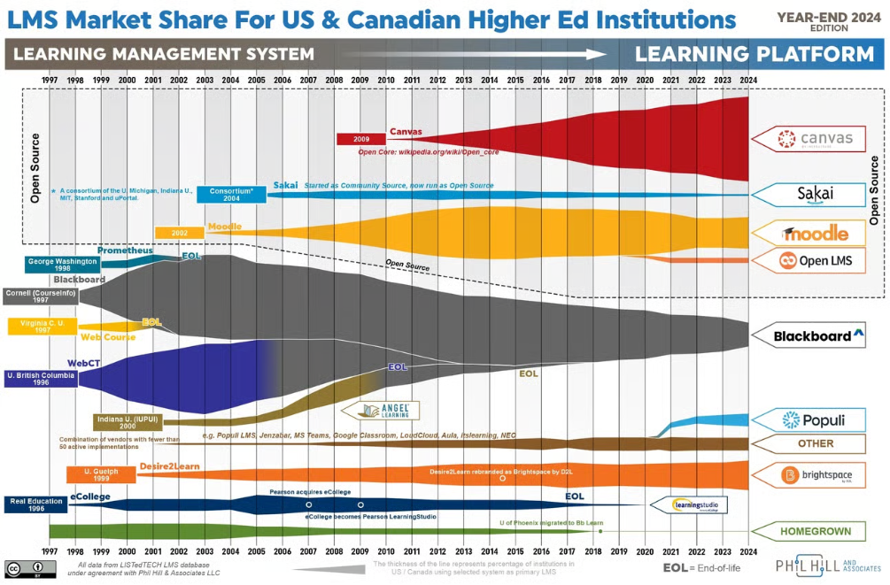
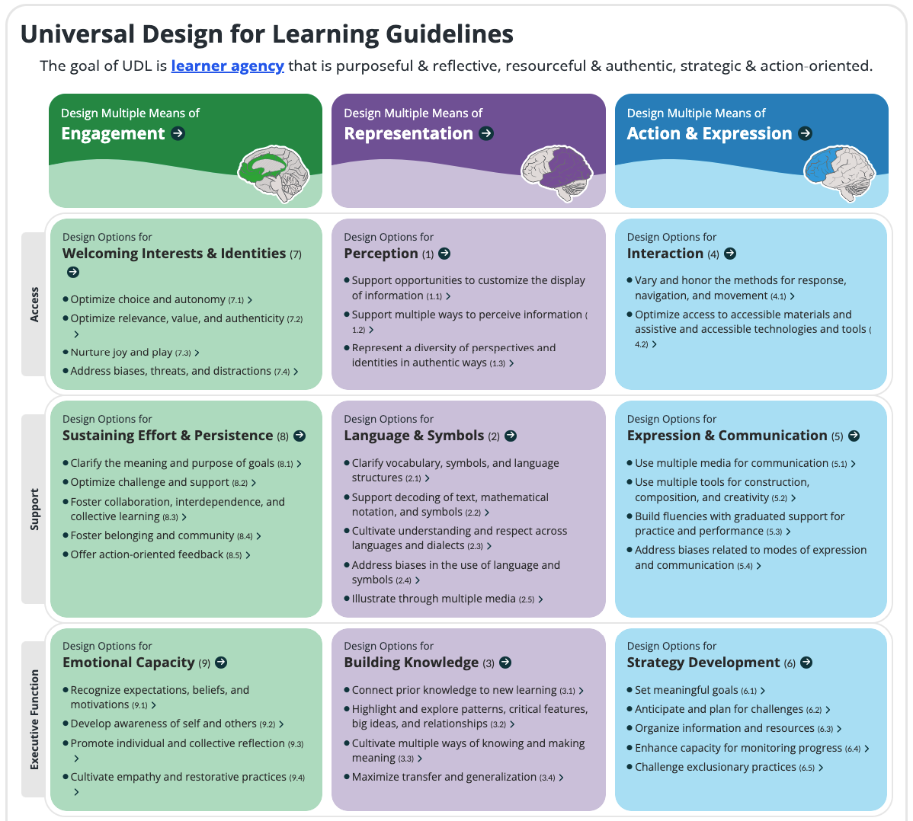
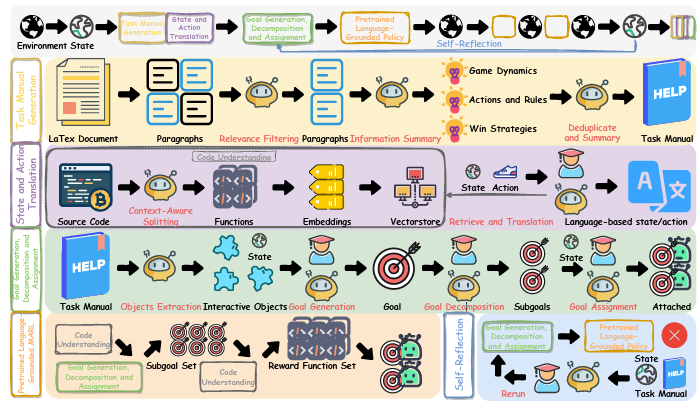
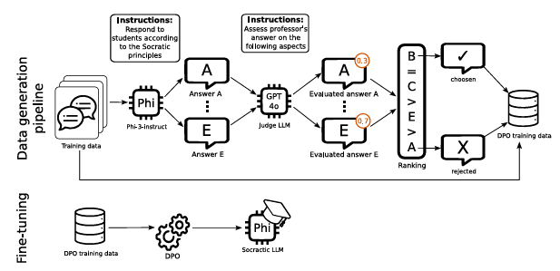

Report Compiled by: AcademiChat Research Team
Date: July 31, 2025

(source: State of Higher Ed LMS Market for US and Canada: Year-End 2024 Edition )
The table below compares market-leading LMS platforms and AcademiChat, highlighting key innovation dimensions.
| Innovation Dimension | >Canvas / Blackboard / D2L / Moodle | AcademiChat |
|---|---|---|
| AI-Native Design | ❌ Not Available | ✅ |
| Automated Course Decomposition | ❌ Not Available | ✅ |
| Adaptive Prerequisites | Limited | ✅ |
| Conversational Delivery | Limited | ✅ |
| Microlearning Foundation | ❌ Not Available | ✅ |
AcademiChat is following the principles from the Universal Design for Learning Guidelines 3.0 during the course decompositioning process

(source: CAST UDL Guidelines )
AcademiChat references the Semantically Aligned Task Decomposition methodology, employing a Multi-Agent approach to effectively decompose courses.

AcademiChat gains insights from a fine-tuned model designed for Socratic interactions and develops Socratic-style chatbots to foster critical thinking.

(source: Page 3 of the referenced paper EULER: Fine-Tuning a Large Language Model for Socratic Interactions )